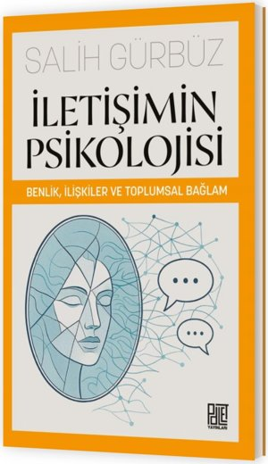
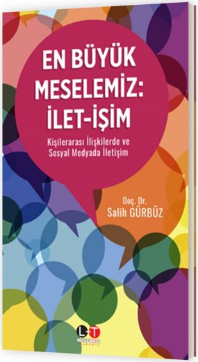
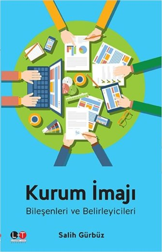
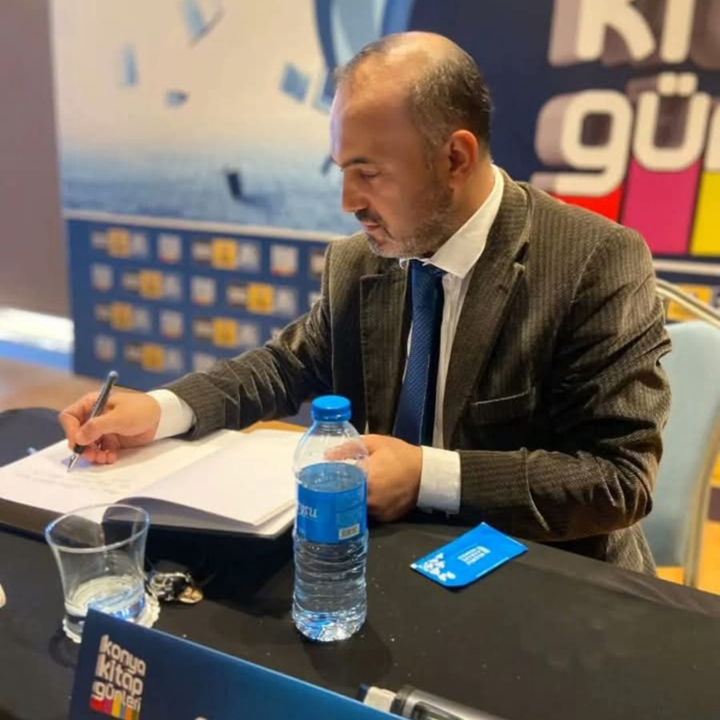
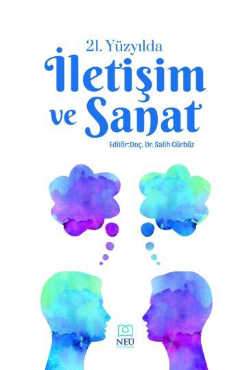
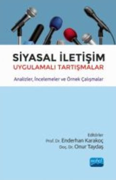
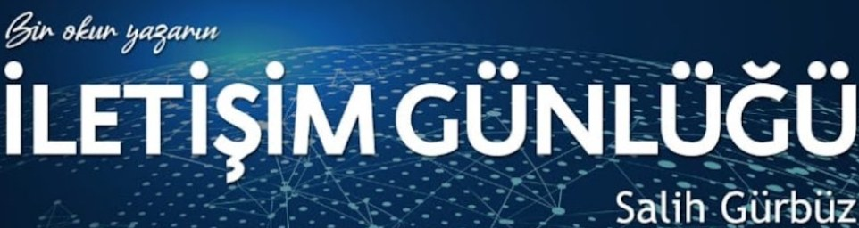

İletişimin Psikolojisi
Benlik, İlişkiler ve Toplumsal Bağlam
The Psychology of Communication: Self, Relationships and Social Context
Palet Yayınları, 2025
Buy
Academic · Broadcaster · Journalist
Head of the Department of Radio, Television and Cinema, Necmettin Erbakan University
Where the microphone, the lectern and the pen meet, there is a single question: how do people speak with themselves and with the world? He pursues it with more than twenty-five years of radio broadcasting, a pen shaped by journalism, and an academic career in media research.
Books İletişimin Psikolojisi (2025), En Büyük Meselemiz: İlet-İşim (2022), Kurum İmajı (2017)
New series
Brief notes on communication drawn from everyday life, a few minutes each, in Turkish. Tap and it starts right away.
Communication Diary · Line of the day
Every journey begins with a question.
Assoc. Prof. Dr. Salih Gürbüz is the founding head of the Department of Radio, Television and Cinema at the Faculty of Fine Arts and Architecture, Necmettin Erbakan University. He also chairs the graduate programme (MA with thesis) in Cinema and Television at the university's Institute of Social Sciences. He received his PhD in Public Relations and Publicity from Selçuk University and became an associate professor in 2020.
His research asks how media produce meaning. Drawing on semiotics, critical discourse analysis and framing theory, he analyses film, news and social media texts, and conducts field research on corporate image, crisis communication and political communication. His work includes twenty-six peer-reviewed articles, twenty book chapters (among them chapters with Peter Lang), three monographs and three edited volumes. The thirteen master's theses he has supervised span a research field from cinema to political communication.
He does not keep knowledge behind the lectern. In 2004-2005 he was editor-in-chief of the magazine Anadolu'nun Sesi; he has written for the newspapers Hakimiyet and Milli Gazete and continues to write for Ribat magazine. Through radio programmes, his YouTube channel and projects ranging from TÜBİTAK-funded media literacy training to documentary production, he brings academic work to the wider public. Before joining academia he taught for ten years in schools of the Ministry of National Education.
Selected recordings from the İletişim Günlüğü (Communication Diary) channel, in Turkish. Press play and the list plays in order.
Monographs, edited volumes and book chapters. Titles are given in the original language, with English translations.

Benlik, İlişkiler ve Toplumsal Bağlam
The Psychology of Communication: Self, Relationships and Social Context
Palet Yayınları, 2025
Buy
Kişilerarası İlişkilerde ve Sosyal Medyada İletişim
Our Greatest Issue: Communication in Interpersonal Relationships and Social Media
Literatürk Academia, 2022

Bileşenleri ve Belirleyicileri
Corporate Image: Its Components and Determinants
Literatürk Academia, 2017
Buy

Communication and Art in the 21st Century
Editor: Salih Gürbüz
NEU Press, 2021
View the book
Critical Approaches and Analyses
Editors: Salih Gürbüz, Bayram Oğuz Aydın, Enderhan Karakoç
Akademisyen Kitabevi, 2025
Buy
Editors: Bayram Oğuz Aydın, Salih Gürbüz, Özlem Duğan
Peter Lang, 2019
Buy
Philosophy of Cinema
Nobel Akademik Yayıncılık

Analyses of Cinema and Society
Nobel Akademik Yayıncılık

Political Communication: Theoretical Debates
Nobel Akademik Yayıncılık

Political Communication: Applied Debates
Nobel Akademik Yayıncılık
Programmes that carry academic questions to the microphone and the screen. All broadcasts are in Turkish.

YouTube İletişim Günlüğü @iletisimgunlugu · Visit the channelEssays and interviews published in culture and arts magazines, in Turkish. English translations of the titles are given below each one.
The full list of twenty-six peer-reviewed articles and twenty book chapters is in the CV. Up-to-date citation and review records are on the academic profiles.